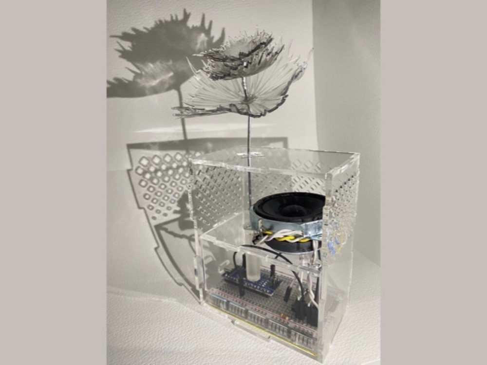
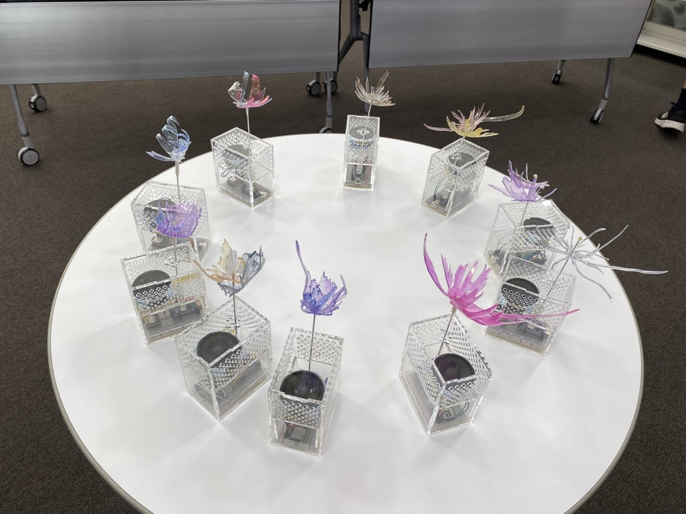

Voice Flower

Technology
- Arduino
- 3D Printer
- Laser Cutter
- Processing
Voice Flower is a device that stores and plays back voices in the form of flowers.
A recorded voice blooms into petals shaped from its waveform. When the flower is placed into a vase, the recorded audio is played back.
The device allows users to preserve emotions, feelings, and memories through their voices. The circular waveform used for the petals is generated in Processing from recorded audio data.
The waveform image is cut from plastic sheets using a laser cutter, and the sheets are heated to form flowers. Audio data is embedded into the vase so that the voice can be played from it.
Voice Flower was used in a workshop created as part of Meisei University's 100th anniversary project.
